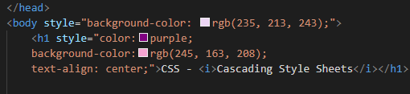
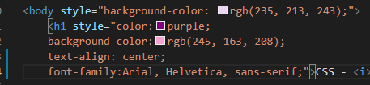

CSS - Cascading Style Sheets
INLINE
- Os código CSS são definidos dentro de uma tag HTML.
Afetam somente a tag em que foi definida.
- Aplicado para modificar algo pontual.
Algumas sintaxes utilizando o inline:


- style="background-color: - usa-se para colorir todo o fundo do site quando colocado dentro da tag body.
- style="color: - define a cor da fonte.
- background-color: - define a cor de fundo de algum título ou alguma outra escrita.
- text-align: center - utilizado para alinhar o conteúdo.
- style="font-size: - define o tamanho da fonte.
- font-famiy :Arial, Helvetica, sans-serif;" - muda a fonte do site inteiro quando colocado dentro da tag "body".
Esta forma de alteração Inline vai ter precedência sobre as outras formas de estilização.